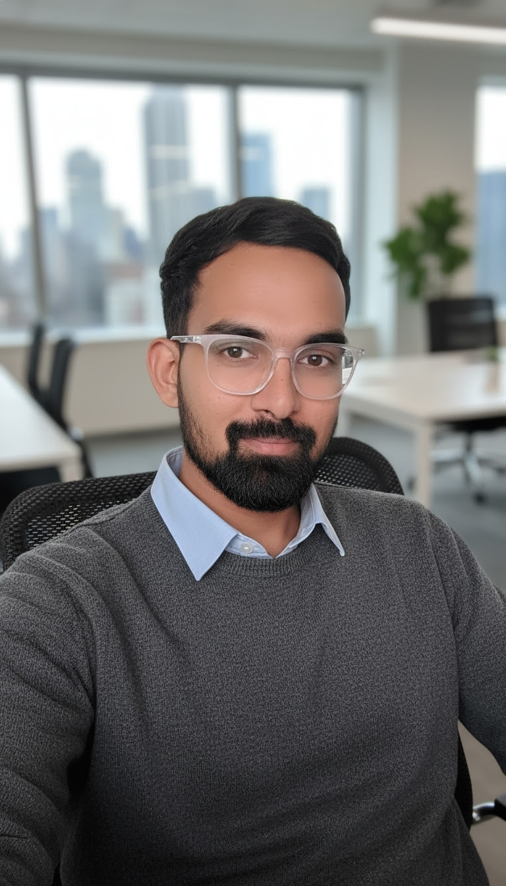

01 / SYSTEMS
Start with how it works.
My Electrical Engineering background gave me a foundation in systems thinking and the satisfaction of making ideas tangible.
FOUNDATION · ELECTRICAL ENGINEERINGA PRACTICAL KIND OF CURIOSITY
Technology, made human. I connect embedded systems to real-world learning — and ideas to the people who can bring them to life.
GET TO KNOW MY WORK ↘
My work has moved across engineering, learning and business. The constant has been translation.
Understanding how a system works is only the start. I care about making it understandable, useful and possible for someone else to build on.
Each chapter adds another lens: how systems behave, how people learn, and how teams move from intention to execution.
My Electrical Engineering background gave me a foundation in systems thinking and the satisfaction of making ideas tangible.
FOUNDATION · ELECTRICAL ENGINEERINGAcross business development, sales, EdTech and operations, I learned to connect technical detail with the bigger picture — and bring customers, learners and teams into the conversation.
EXPERIENCE · COMMUNICATION & EXECUTIONTraining, mentoring and career guidance turned that instinct outward: practical explanations, real tools, and learning by doing. Public speaking and presentations help take those ideas into the room.
EDTECH · TECHNOLOGY TRAINING · MENTORINGWith Embeddskills, I’m building an engineering-led learning practice around Embedded Systems and IoT — bringing technical education, leadership and entrepreneurship together.
FOUNDER & TRAINER · EMBEDDSKILLSA CLOSER LOOK
Connect hardware, firmware, communication and cloud into one understandable picture. Practical IoT learning starts with seeing how the parts relate.
SENSORS · MICROCONTROLLERS · DEVICE-TO-CLOUDSelected areas of work. Each begins with a question and gets better through building, testing and sharing.
Founder & Trainer · Building practical learning around embedded hardware, firmware, IoT and connected systems.
EXPLORE EMBEDDSKILLS ↗Technical training, mentoring and career conversations that help learners connect concepts to a path forward.
WORKSHOPS & SESSIONS ↗Explore work spanning connected vehicles, EV systems, smart metering, remote firmware updates, device monitoring and cellular IoT.
EXPLORE ENGINEERING DOMAINS ↘SELECTED PROJECTS & ENGINEERING DOMAINS
Connected systems are a thread through my work — from the vehicle to the meter to the network.
Embedded software and connected vehicle technologies focused on evolving vehicle architectures, connectivity, remote functionality and intelligent vehicle ecosystems.
Embedded control and vehicle functionality for cruise control systems integrated with electric vehicle platforms.
Real-time monitoring across vehicle parameters, system status, data acquisition, telemetry and connected monitoring.
Smart meter communication and data exchange for metering, monitoring and connected infrastructure applications.
Remote firmware delivery and update management using HTTP-based deployment workflows.
Network and device monitoring implementations using SNMP for communication and system management.
MQTT·CoAP·NB-IoT·LTE Cat-M / Cat-M1·4G LTE
Lightweight messaging and constrained-device communication through low-power and cellular connectivity for embedded applications.I like being where an idea meets its people.
That might mean understanding the technical detail, making the goal clear to a team, supporting a learner through a tricky concept, or keeping the operational pieces moving.
The work changes. The practice stays: listen carefully, make the next step understandable, then follow through.
Understanding grows when you can make something work.
LEARN BY DOINGTechnology matters most when it meets a real need.
BUILD WITH PURPOSEGood explanations make room for better questions.
KEEP THE CONVERSATION OPENHAVE A QUESTION, AN IDEA, OR A ROOM FULL OF CURIOUS PEOPLE?